Bring Your Hero to Life: Animation
Give your character a skeleton on Mixamo, bring four animations into Godot (idle, run, jump and punch), and blend them with an AnimationTree so you can punch while running or jumping. Every step has a short screen recording, and the full walkthrough video below strings them all together.
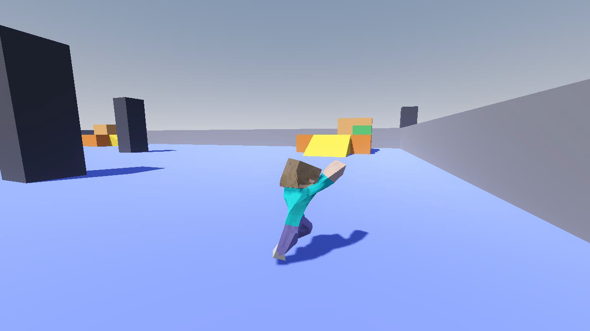
▶ Watch the whole lesson (about 7 minutes)
One video, every step in order, ending with the finished game being played. Follow it in the editor and you can build the whole lesson without reading anything below.
- Rig and animate on Mixamo
- The import script
- Swap in the new character
- Give it an AnimationPlayer
- Add an attack action
- Build the AnimationTree
- Update the player script
- Punch while you run
| Key | Action |
|---|---|
| W A S D | Run (the run animation plays) |
| Mouse | Turn the camera |
| Space | Jump |
| Left click | Punch, standing, running or in the air |
| Esc | Show the mouse again. The first click back in the game only hides it and doesn't punch. |
- How to give a Tinkercad model a skeleton and animations on Mixamo
- How an import script fixes every animation automatically when it's imported
- How AnimationPlayer stores clips and AnimationTree mixes them
- How a Transition node switches between idle, run and jump
- How a OneShot node with a bone filter plays a punch on the upper body only
1Rig and animate on Mixamo
To animate a model, it needs a skeleton: bones inside the mesh that bend it. Tinkercad models don't have one. Mixamo (mixamo.com, free with an Adobe account) adds a skeleton automatically, then lets you pick ready-made animations.
1a. Pose and export from Tinkercad
Mixamo can only rig a humanoid that is:
- standing upright and facing the front
- in a T-pose or A-pose: arms held out, not touching the body
- standing with the legs a little apart
- In Tinkercad, click Export and choose .OBJ. You get a
.zipwith an.objand an.mtl(the colors). - Don't unzip it. Mixamo takes the .zip as it is. Mixamo doesn't accept .glb, which is why we use OBJ.
Save the Tinkercad .zip in your project's character/ folder, for example character/minecraft.zip. If you ever want more animations, you can upload it again. Godot ignores .zip files, so it doesn't get in the way.
1b. Upload and auto-rig
- Go to mixamo.com, sign in, and click Upload Character. Drop the .zip in.
- Check that the model stands upright and faces you. If it doesn't, use the rotate buttons. Click Next.
- Drag the circles onto the chin, both wrists, both elbows, both knees and the groin. Leave Use Symmetry on and set Skeleton LOD to No Fingers. A blocky hand doesn't need finger bones.
- Click Next and wait about a minute. Check the preview: if an arm or leg looks badly bent, go Back and move the markers.
1c. Pick four animations
Search the Animations tab. Any similar animation works:
| Our name | Search Mixamo for | Setting |
|---|---|---|
idle | Breathing Idle | – |
run | Running | Tick In Place |
jump | Jump | Tick In Place if you see it |
punch | Punching, Punch Combo, Cross Punch | Tick In Place if you see it |
Our script already moves the player. If the animation also walks forward, the model runs away from its collision capsule and snaps back every loop. If you forget, don't worry: the import script in Step 2 fixes it.
1d. Download
- For each animation, click Download with Format: FBX Binary, Skin: With Skin, Frames per Second: 30, Keyframe Reduction: none.
- Rename the files
idle.fbx,run.fbx,jump.fbxandpunch.fbx, and put them in a new folder:character/mixamo/.
The import script in the next step names each animation after its file. run.fbx becomes the animation run, and the rest of the lesson uses those four names.
2The import script
A Mixamo animation isn't quite ready for our game when it arrives:
| Problem | What the script does |
|---|---|
| The run (if not "In Place") walks 3 m forward every loop | Pins the hips over one spot, so the model stays in its capsule |
The jump lifts the body itself, but player.gd already does the jumping | Also pins the hip height for jump, so it doesn't jump twice as high |
| Nothing loops | Makes idle and run repeat forever |
| In the editor the model lies half in the floor in Mixamo's T-pose | Stands it in the first pose of its animation |
| Every FBX brings its own AnimationPlayer, and Tinkercad leaves empty meshes behind | Removes them, and saves the animation on its own as character/animations/<name>.res |
A script that runs every time a file is imported is called a post-import script. It extends EditorScenePostImport, and Godot calls its _post_import() with the imported scene.
2a. Write the script
- In FileSystem, right-click
scripts/→ Create New → Script… - Name it
mixamo_import.gd. The Inherits box doesn't matter, because you'll replace everything. Type in the code below.
@tool extends EditorScenePostImport ## Runs every time a Mixamo FBX in character/mixamo/ is imported. ## Saves its animation as character/animations/<file name>.res for the Player to play. ## Animations that repeat forever instead of playing once. const LOOPING := ["idle", "run"] ## Animations whose hips must also stay at one height, because player.gd already moves the body up and down. const LOCK_HEIGHT := ["jump"] func _post_import(scene: Node) -> Object: var anim_name := get_source_file().get_file().get_basename() var anim_player: AnimationPlayer = scene.get_node("AnimationPlayer") var anim: Animation = anim_player.get_animation("mixamo_com").duplicate() if anim_name in LOOPING: anim.loop_mode = Animation.LOOP_LINEAR _keep_in_place(anim, anim_name in LOCK_HEIGHT) DirAccess.make_dir_recursive_absolute("res://character/animations") ResourceSaver.save(anim, "res://character/animations/%s.res" % anim_name) _pose_first_frame(scene.get_node("Skeleton3D"), anim) # The Player has its own AnimationPlayer, and Tinkercad leaves some empty meshes behind. for child in scene.get_children(): if child is AnimationPlayer or (child is MeshInstance3D and child.mesh == null): scene.remove_child(child) child.free() return scene ## Stands the model in the clip's first pose. Otherwise the editor shows Mixamo's T-pose, half in the floor. func _pose_first_frame(skeleton: Skeleton3D, anim: Animation) -> void: for track in anim.get_track_count(): var bone := skeleton.find_bone(String(anim.track_get_path(track).get_subname(0))) if bone == -1: continue var value = anim.track_get_key_value(track, 0) match anim.track_get_type(track): Animation.TYPE_POSITION_3D: skeleton.set_bone_pose_position(bone, value) Animation.TYPE_ROTATION_3D: skeleton.set_bone_pose_rotation(bone, value) Animation.TYPE_SCALE_3D: skeleton.set_bone_pose_scale(bone, value) ## Pins the hips over the same spot so the model never walks away from its collider. func _keep_in_place(anim: Animation, lock_height: bool) -> void: var track := anim.find_track(^"Skeleton3D:mixamorig_Hips", Animation.TYPE_POSITION_3D) var start: Vector3 = anim.track_get_key_value(track, 0) for i in anim.track_get_key_count(track): var pos: Vector3 = anim.track_get_key_value(track, i) pos.x = start.x pos.z = start.z if lock_height: pos.y = start.y anim.track_set_key_value(track, i, pos)
| Part | What it does |
|---|---|
@tool | Lets the script run inside the editor. Every import script needs it. |
get_source_file() | The FBX being imported. run.fbx gives the name run. |
"mixamo_com" | What every Mixamo animation is called inside the FBX. |
ResourceSaver.save(…) | Writes the fixed animation to character/animations/. |
_keep_in_place() | Copies the hips' first X/Z position (and for jump, the height too) into every keyframe. |
mixamo_import.gd: the two lists at the top, _post_import(), then the two helper functions.2b. Use it on the four FBX files
- Click
idle.fbxin FileSystem and open the Import tab (next to Scene, top left). - Scroll to the bottom. Under Import Script → Path, pick
res://scripts/mixamo_import.gd. - Click Reimport.
- Do the same for
run.fbx,jump.fbxandpunch.fbx. Or Shift-click to select all four and set it once.
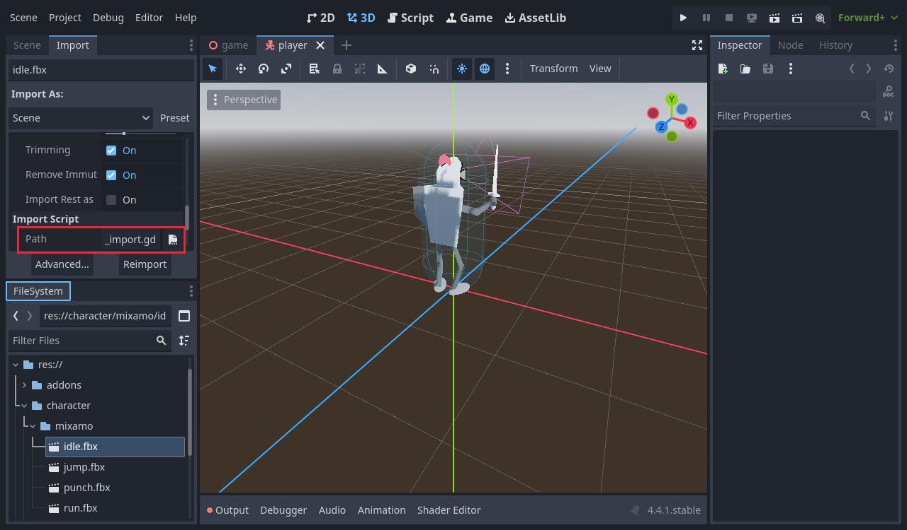
character/animations/ holds the four clips.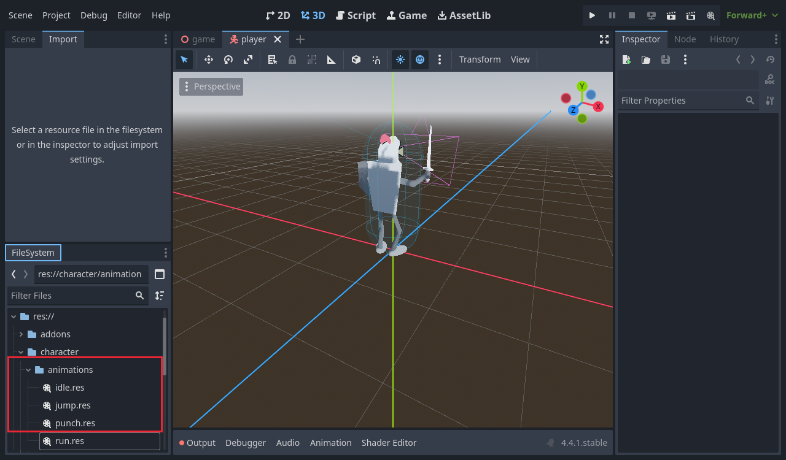
idle.res, jump.res, punch.res and run.res.These come from empty shapes that Tinkercad leaves in the model. They appear during the import, before the script removes those shapes. They're harmless and you can ignore them.
3Swap in the new character
Open character/player.tscn. Everything from Lesson 2 stays: only the model inside Model changes.
- Select the old model under Model (the knight,
character1) and delete it. - Drag
character/mixamo/idle.fbxfrom FileSystem onto Model. Rename the new nodeCharacter(double-click it). - Leave its scale and position alone. Mixamo exports in meters, so the character is already life-size (about 1.6 m).
- Select CollisionShape3D, click the capsule, and set Height to
1.6. Then set the CollisionShape3D's Position Y to0.8(half the height).
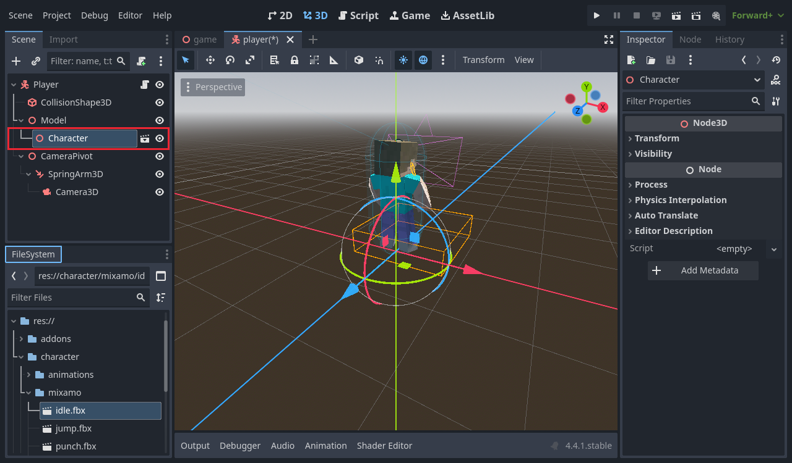
idle.fbx.idle.fbx on Model as Character, and fitting the capsule to 1.6 m.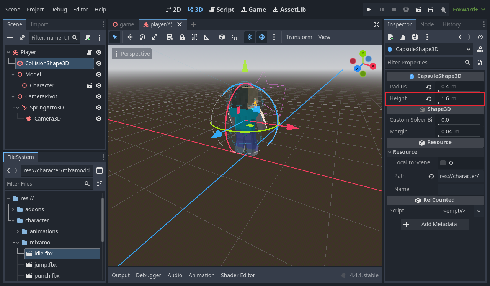
4Give it an AnimationPlayer
An AnimationPlayer holds animations and can play them. Here it's just the library of our four clips. In Step 6 the AnimationTree decides which one plays.
- Select Model, click +, search for AnimationPlayer and click Create.
- In the Inspector, set Root Node to
Character. It shows as../Character. The clips animate the skeleton inside Character, so the player must start looking from there. - In the Animation panel at the bottom, click Animation → Manage Animations…
- Click New Library and leave the name empty. That makes the [Global] library.
- Click the folder icon on the [Global] row (Load Animation) and pick the four
.resfiles incharacter/animations/.
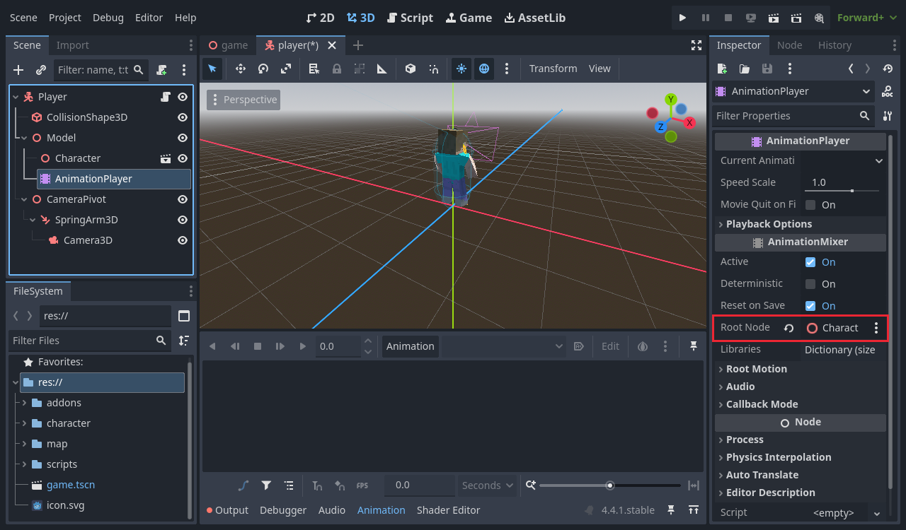
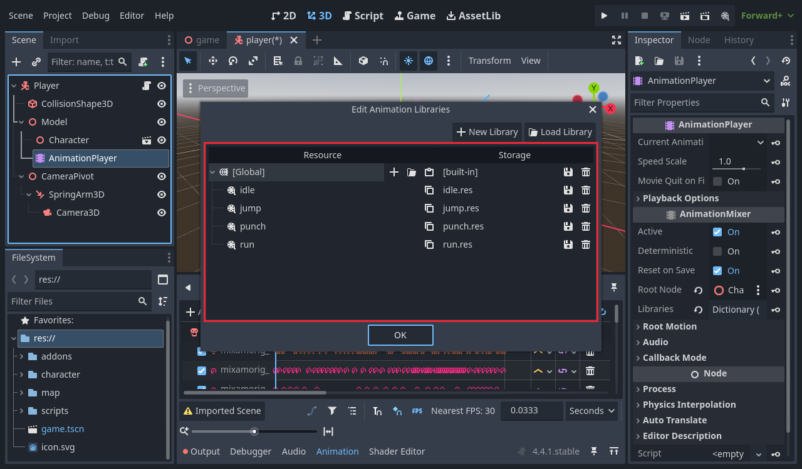
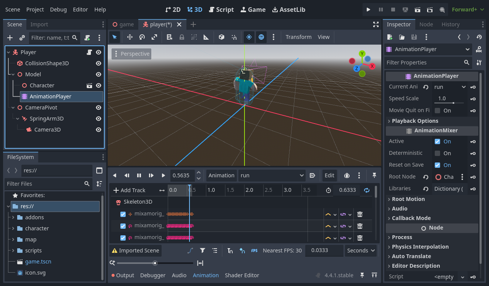
5Add an attack action
- Open Project → Project Settings… → Input Map.
- Type
attackin Add New Action and click + Add. - Click the + on the attack row. In the dialog, open Mouse Buttons, pick Left Mouse Button and click OK. Clicking inside the "Listening for input" box works too.
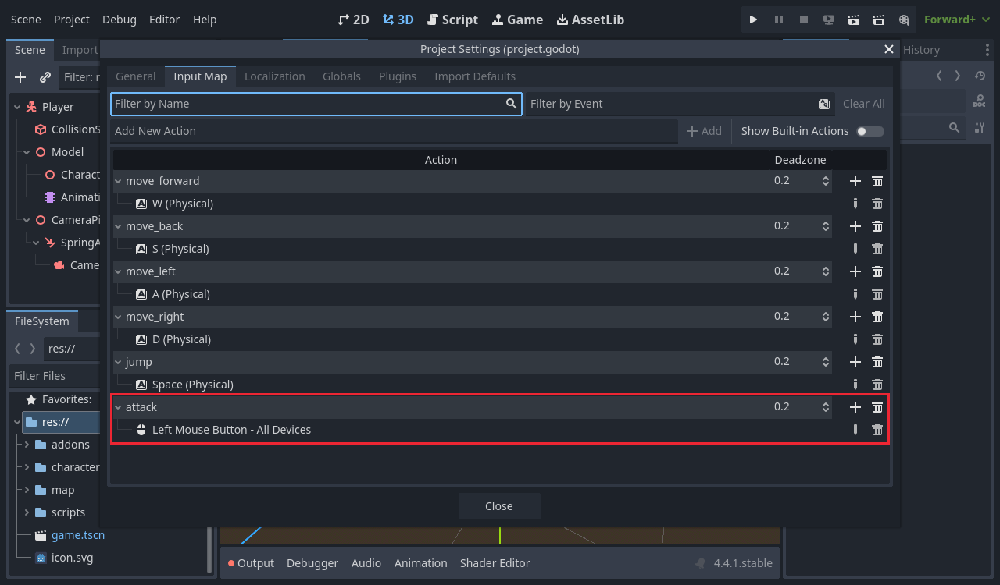
attack action: Left Mouse Button – All Devices.attack and choosing Mouse Buttons → Left Mouse Button in the event dialog.6Build the AnimationTree
An AnimationPlayer plays one animation at a time. To punch while running, we need to mix two: the legs from run, the arms from punch. That's what an AnimationTree does. Here's the graph you'll build:
idle ───────────────┐ run ───────────────┤ movement ────┐ jump ── jump_seek ──┘ (Transition) │ punch ──── Output punch_anim ────────────────────────┘ (OneShot, upper body only)
| Node | Type | Job |
|---|---|---|
idle, run, jump, punch_anim | Animation | Each one plays one clip. |
jump_seek | TimeSeek | Lets the script start the jump part-way in, past the crouch. |
movement | Transition | A switch: plays one of idle / run / jump, fading between them over 0.2 s. |
punch | OneShot | Plays the punch once on top of movement, then fades back out. |
6a. The node
- Select Model and add an AnimationTree.
- In the Inspector set Anim Player to the AnimationPlayer, Root Node to Character, and Tree Root to New AnimationNodeBlendTree.
- Open the AnimationTree panel at the bottom. The expand button at its bottom right makes it bigger.
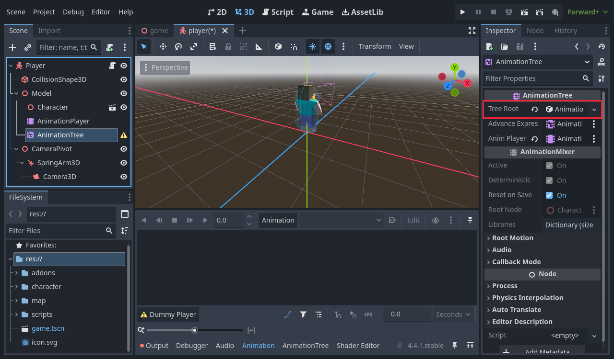
6b. The legs: idle, run and jump
- Right-click an empty part of the graph (or click Add Node…) and pick Animation. Type
idleinto the name box at the top of the node, and pickidlein its animation drop-down. Do the same forrunandjump. - Add a TimeSeek node, name it
jump_seek, and connectjumpinto it. - Add a Transition node and name it
movement. Click it, and in the Inspector set Xfade Time to0.2. Under Inputs, add three inputs namedidle,runandjump. - Connect
idle→ movement's idle,run→ run, andjump_seek→ jump. Drag from a node's right-hand dot to the left-hand dot of the next one.
The script talks to the tree by node name: parameters/movement/transition_request, parameters/jump_seek/seek_request and parameters/punch/request. The Transition inputs must be exactly idle, run and jump.
6c. The punch on top
- Add another Animation node, set it to
punch, and name itpunch_anim. - Add a OneShot node and name it
punch. Set Fadein Time to0.1and Fadeout Time to0.2. - Connect
movement→ punch's in,punch_anim→ punch's shot, and punch → Output.
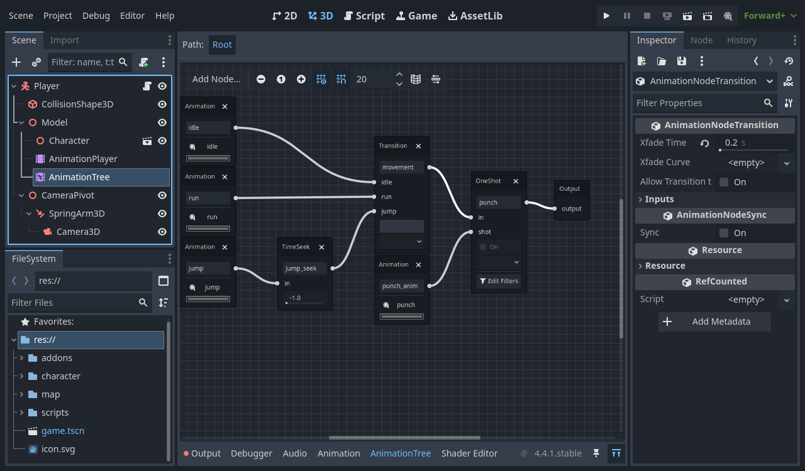
6d. Upper body only: the filter
Right now the punch would take over the whole body, legs included, so you'd stop running. A filter tells the OneShot which bones it's allowed to move.
- On the punch node, click Edit Filters.
- Tick Enable Filtering, then tick mixamorig_Spine and every bone under it: Spine1, Spine2, Neck, Head, and both Shoulder, Arm, ForeArm and Hand.
- Leave Hips and both legs unticked. Those bones keep playing idle, run or jump.
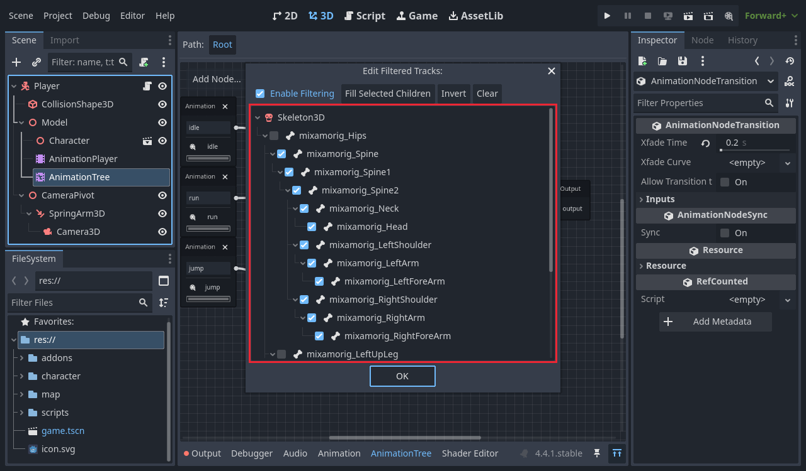
movement says.Select mixamorig_Spine and click Fill Selected Children. That ticks everything above the hips in one go.
6e. Try it in the editor
Select AnimationTree and open Parameters in the Inspector. Set Movement → Transition Request to run, then set Punch → Request to Fire. The character runs and punches right in the viewport.
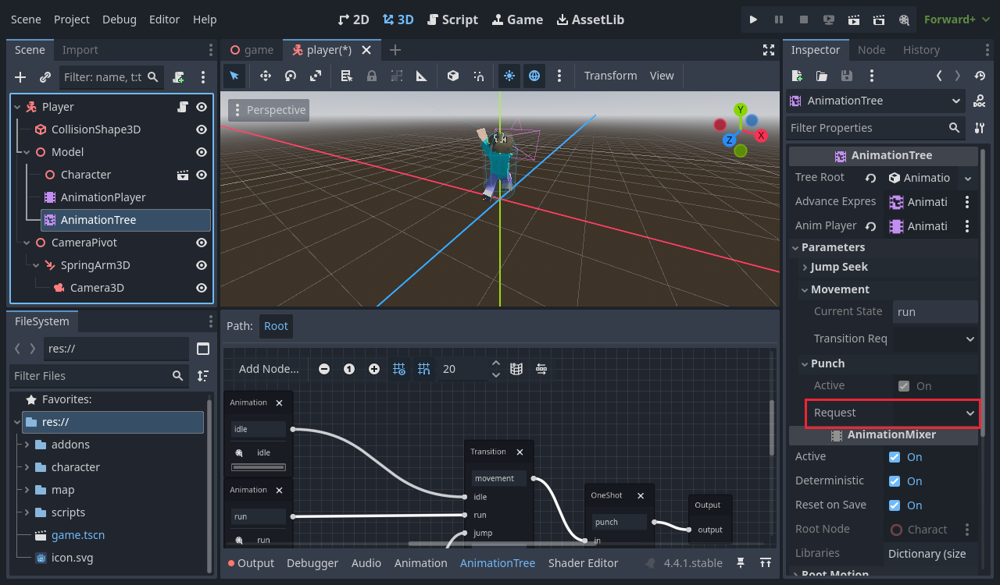
7Update the player script
Open scripts/player.gd. Most of it is the same as Lesson 2. Change the highlighted lines:
new or changed since Lesson 2
extends CharacterBody3D ## Walking speed in meters per second. @export var speed := 6.0 ## Upward speed when jumping. Higher number = higher jump. @export var jump_velocity := 5.5 ## How fast the mouse turns the camera. @export var mouse_sensitivity := 0.003 ## How fast the character turns to face the way it walks. @export var turn_speed := 10.0 ## Where the jump animation starts, skipping the crouch before the feet leave the ground. @export var jump_start_time := 0.7 var gravity: float = ProjectSettings.get_setting("physics/3d/default_gravity") @onready var model: Node3D = $Model @onready var camera_pivot: Node3D = $CameraPivot @onready var spring_arm: SpringArm3D = $CameraPivot/SpringArm3D @onready var anim_tree: AnimationTree = $Model/AnimationTree func _ready() -> void: # Hide the mouse and lock it to the window so it can turn the camera. Input.mouse_mode = Input.MOUSE_MODE_CAPTURED # Stop the camera arm from bumping into our own body. spring_arm.add_excluded_object(get_rid()) func _unhandled_input(event: InputEvent) -> void: # Mouse left/right turns the pivot, mouse up/down tilts the arm. if event is InputEventMouseMotion and Input.mouse_mode == Input.MOUSE_MODE_CAPTURED: camera_pivot.rotate_y(-event.relative.x * mouse_sensitivity) spring_arm.rotate_x(-event.relative.y * mouse_sensitivity) spring_arm.rotation.x = clamp(spring_arm.rotation.x, deg_to_rad(-70), deg_to_rad(20)) # Esc shows the mouse again; clicking in the game hides it again. if event.is_action_pressed("ui_cancel"): Input.mouse_mode = Input.MOUSE_MODE_VISIBLE elif event is InputEventMouseButton and event.pressed and Input.mouse_mode != Input.MOUSE_MODE_CAPTURED: Input.mouse_mode = Input.MOUSE_MODE_CAPTURED # Once the mouse is captured, a left click punches, even while running or jumping. elif event.is_action_pressed("attack") and not anim_tree.get("parameters/punch/active"): punch() func _physics_process(delta: float) -> void: # Gravity pulls us down while we are in the air. if not is_on_floor(): velocity.y -= gravity * delta # Jump only when standing on something. if Input.is_action_just_pressed("jump") and is_on_floor(): velocity.y = jump_velocity # Turn WASD into a direction based on where the camera is looking. var input_dir := Input.get_vector("move_left", "move_right", "move_forward", "move_back") var direction := camera_pivot.global_basis * Vector3(input_dir.x, 0, input_dir.y) direction.y = 0 direction = direction.normalized() if direction: velocity.x = direction.x * speed velocity.z = direction.z * speed # Smoothly turn the model to face the way we are walking. var target_angle := atan2(direction.x, direction.z) model.global_rotation.y = lerp_angle(model.global_rotation.y, target_angle, turn_speed * delta) else: velocity.x = move_toward(velocity.x, 0, speed) velocity.z = move_toward(velocity.z, 0, speed) move_and_slide() update_animation() ## Tells the AnimationTree what the legs should do: stand, run or jump. func update_animation() -> void: var state := "idle" if not is_on_floor(): state = "jump" elif Vector2(velocity.x, velocity.z).length() > 0.1: state = "run" if anim_tree.get("parameters/movement/current_state") != state: anim_tree.set("parameters/movement/transition_request", state) # Skip the crouch at the start of the jump animation. if state == "jump": anim_tree.set("parameters/jump_seek/seek_request", jump_start_time) ## Plays the punch on the upper body only, so the legs keep doing what they were doing. func punch() -> void: anim_tree.set("parameters/punch/request", AnimationNodeOneShot.ONE_SHOT_REQUEST_FIRE)
How it works
| Part | What it does |
|---|---|
anim_tree | Finds the AnimationTree so the script can talk to it. |
update_animation() | Runs after every move_and_slide(). In the air → jump, moving → run, otherwise idle. It only sends a transition_request when the state changes, so the animation doesn't restart every frame. |
seek_request | When the jump starts, skips to jump_start_time (0.7 s), past the crouch, because the body is already in the air. |
punch() | Fires the OneShot. It plays once on the upper body and fades out by itself. |
parameters/punch/active | True while a punch is playing, so clicking again doesn't restart it halfway. |
| Mouse click logic | If the mouse is free (after Esc), the first click only captures it. Once captured, a left click punches. |
player.gd, one block at a time.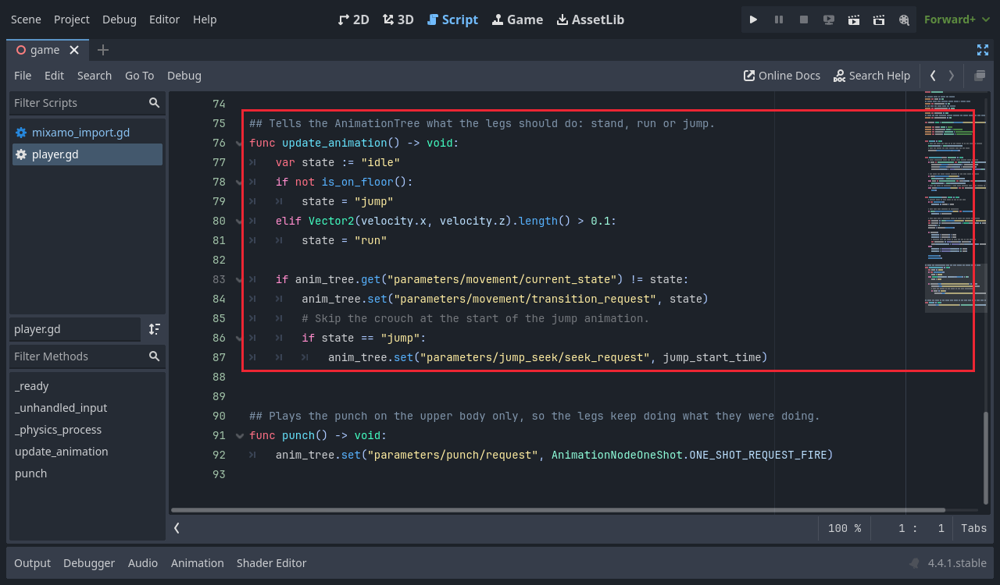
update_animation() is the heart of it: it tells the tree what the legs should do.8Play it
Press F5. Stand still, run, jump, and click to punch. Try punching while holding W and while in the air.
9Tuning
| Setting | Where | Default | Effect |
|---|---|---|---|
| Jump Start Time | Player (Inspector) | 0.7 | Where the jump animation starts. Lower shows more of the crouch; higher starts further into the leap. |
| Xfade Time | movement node | 0.2 | How long idle / run / jump take to fade into each other. 0 snaps instantly. |
| Fadein / Fadeout Time | punch node | 0.1 / 0.2 | How smoothly the punch starts and ends. |
| Filters | punch node → Edit Filters | Spine and up | Untick Spine and Spine1 to keep the chest facing forward and only swing the arms. |
10Troubleshooting
| Problem | Cause and fix |
|---|---|
| Mixamo says it can't rig the model | The arms touch the body, or the model isn't upright and facing front. Pose it in Tinkercad (Step 1a). |
character/animations/ doesn't appear | The Import Script path isn't set, or you didn't click Reimport (Step 2b). Check the Output panel for script errors. |
| Error: Node not found: "AnimationPlayer" during import | That FBX has no animation. Download it again from Mixamo with an animation selected. |
| The character lies in the floor in the editor | It was imported before the import script was set. Reimport it (Step 2b). |
| The character doesn't move its arms or legs in the game | Check the AnimationTree's Anim Player and Root Node (Step 6a), and that every node is connected to Output. |
| The character stays in idle, or never punches, and there's no error | A node or input name in the tree doesn't match the script. The nodes must be movement, jump_seek and punch, and the Transition inputs idle, run and jump. |
| Punching stops the legs | The filter isn't enabled, or the legs are ticked (Step 6d). |
| Left click does nothing | Check the attack action (Step 5). The first click after Esc only captures the mouse. |
| The running model slides away and snaps back | The run wasn't "In Place" and wasn't fixed by the import script. Check that run.fbx uses the script and reimport it. |
11Checklist and challenges
Before moving on, check that:
character/animations/holdsidle,run,jumpandpunch- The character stands inside its capsule in the editor
- It idles when still, runs when moving, and uses the jump animation in the air
- Left click punches, and you can keep running while punching
- Punching in the air works too
Challenges
- Quicker punch: download a single punch from Mixamo (for example "Cross Punch") and save it over
punch.fbx. Nothing else changes. - Kick: add a
kickaction on the right mouse button, a kick animation, and a second OneShot. Should the kick filter take the legs instead of the arms? - Sprint: in the Lesson 2 sprint challenge, speed the run animation up too, with a TimeScale node between
runandmovement. - Landing: add a short landing animation that plays once when you touch the ground again.